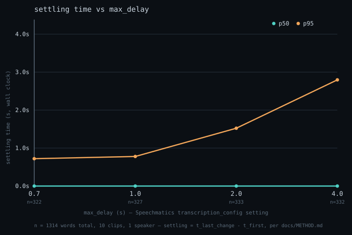

01 · The flip
This is an unedited recording, replayed from a committed run at the pace it actually streamed. Words in orange are still being revised by the engine; words in white have appeared in a finalised message. Watch trying become trapped.
02 · The curve
Every clip, swept across four values of Speechmatics' own
max_delay control, then measured with the same instrument.

| max_delay | words | settling p50 | settling p99 | words revised | revised after final |
|---|
Across 1,227 observed words, 0.0% changed after their
AddTranscript — but settling p99 scales 3.5× from the
shortest max_delay to the longest. Finals don't retract.
They just take longer to arrive than they look like they will.
03 · What settling time is
Vendors publish word error rate (was the final text right?) and latency (how fast did text arrive?). Neither describes the interval in between, where the text is visible, plausible, and still moving.
- emission lag
- how long after a word was spoken before any text for it appeared.
- settling time
- how long the text at that interval kept changing after it first appeared.
- risk window
- how long a word was visible to a consumer while still revisable — from first text to finalised.
Full definitions and the alignment method are in docs/METHOD.md. Everything on this page traces to a run file committed at github.com/adindamochamad/settle.